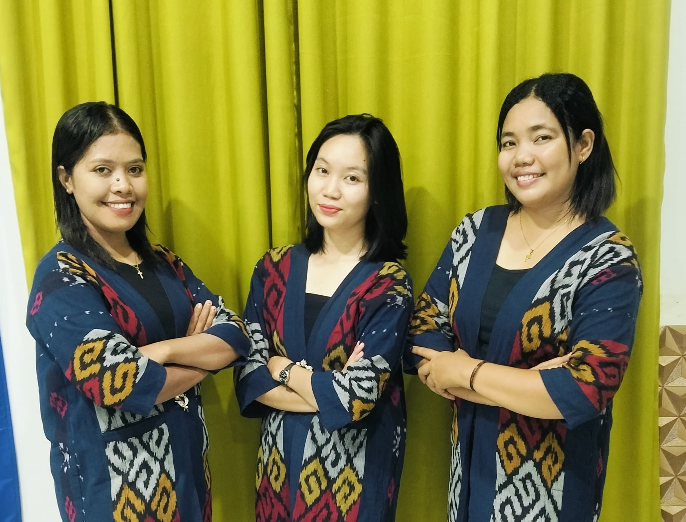
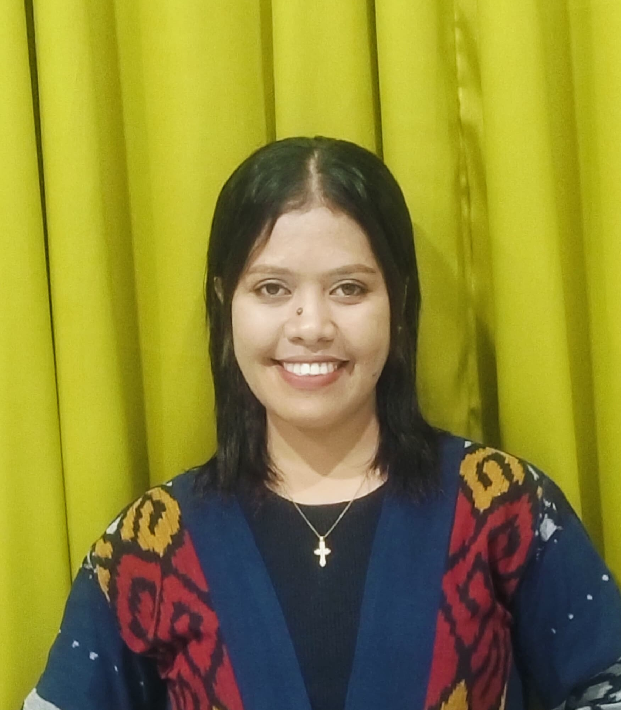
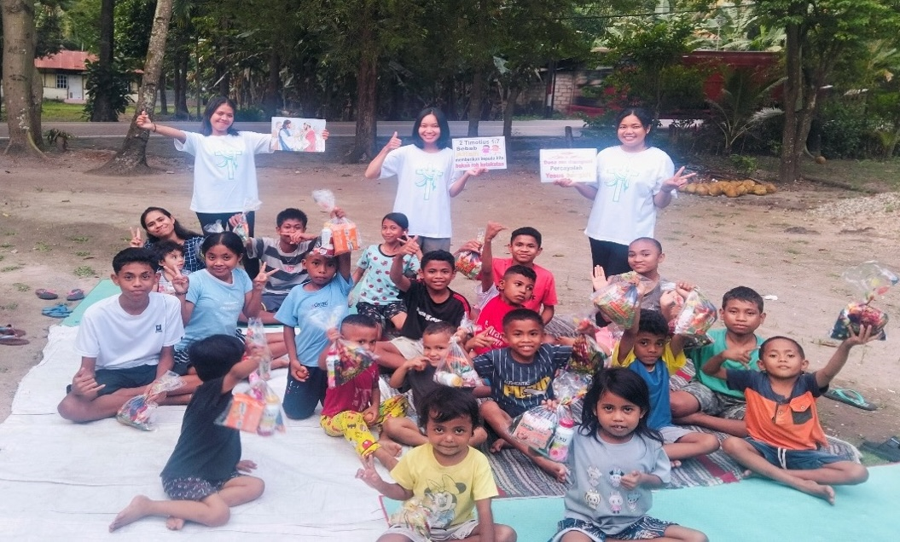
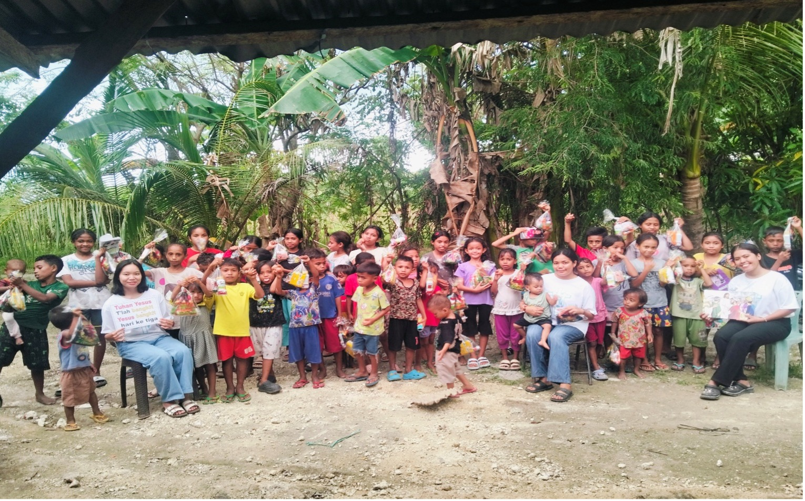
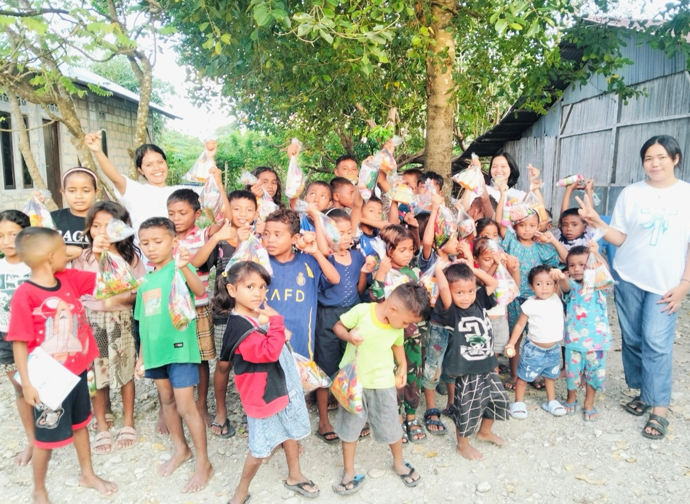

Koordinator
S1 Pendidikan Agama Kristen
Melayani sejak tahun 2024

Guru
S1 Teologi
Melayani sejak tahun 2025
Guru Asistan
Mahasiswa Praktek Program S1
Melayani sejak tahun 2026



Silakan hubungi kami untuk pendaftaran Lifekids Naibonat atau dukungan pelayanan Lifekids.